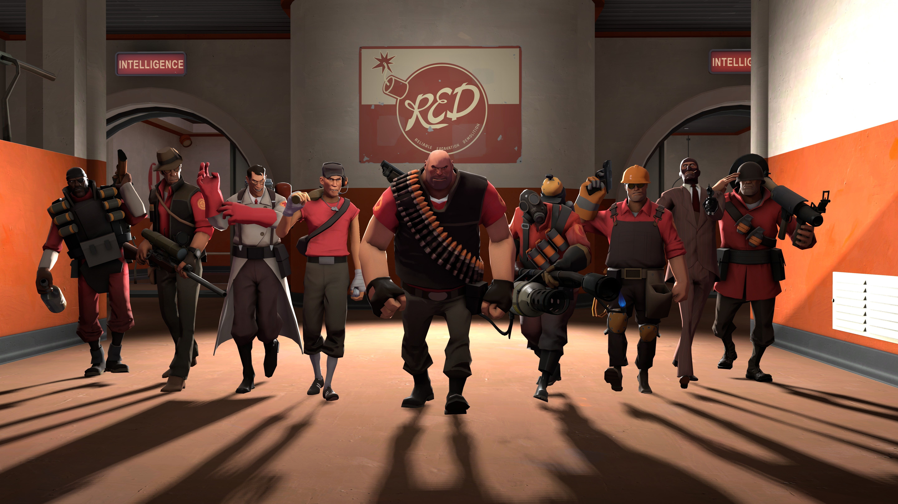

-

Left 4 Dead is a cooperative first-person shooter video game with survival horror elements, developed by Valve South and published by Valve Corporation. The game uses Valve's proprietary Source engine, and is available for Microsoft Windows, Xbox 360 and OS X. Development on the game was completed on November 13, 2008, and two versions were released digitally: A downloadable digital version, released on November 17, 2008, and a digital retail disc version, with a release date determined by region. The digital retail disc version was released in North America and Australia on November 18, 2008; and in Europe on November 21, 2008.
-

Team Fortress 2 is a team-based first-person shooter multiplayer video game developed and published by Valve Corporation. It is the sequel to the 1996 mod Team Fortress for Quake and its 1999 remake. It was released as part of the video game compilation The Orange Box on October 10, 2007 for Windows and the Xbox 360.[3] A PlayStation 3 version followed on December 11, 2007.[2] On April 8, 2008, it was released as a standalone title for Windows. The game was updated to support OS X on June 10, 2010, and Linux on February 14, 2013. It is distributed online through Valve's download retailer Steam; retail distribution was handled by Electronic Arts.
-

Overwatch is an upcoming multiplayer first-person shooter in development by Blizzard Entertainment. Unveiled at BlizzCon 2014, the game emphasizes cooperative gameplay using a cast of various "heroes", each with their own abilities and roles within a team. The game entered closed beta in North America and Europe on October 27, 2015, with plans to bring the beta to Asia at a later date. The final closed beta weekend began on April 15, 2016 and primarily served as a stress test for Overwatch's servers, lasting 36 hours.[2] The game is scheduled to be released on May 24, 2016, for Microsoft Windows, PlayStation 4, and Xbox One.